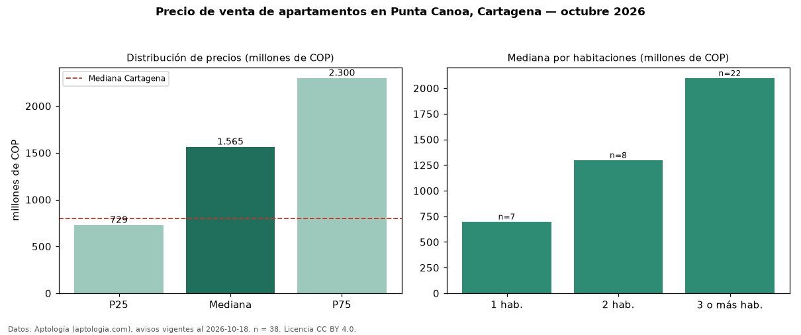

Precio de venta de apartamentos en Punta Canoa, Cartagena — octubre 2026
En Punta Canoa, Cartagena, la mediana de precio de venta de apartamentos es COP 1,56 mil millones, según 38 avisos vigentes. Eso es 96 % por encima de la mediana de Cartagena para apartamentos (COP 800 millones). Por metro cuadrado, la mediana es COP 10,27 millones/m² (n = 30 avisos con área), 31 % por encima de Cartagena (COP 7,86 millones/m²). Por precio mediano es el puesto 1 de 31 barrios de Cartagena con al menos 30 avisos de apartamentos en venta (COP): entre las más caras. La mitad central de los avisos va de COP 729 millones a COP 2,30 mil millones (razón 3,2), una dispersión alta. El área mediana anunciada es 154 m². El segmento con más oferta es el de 3 o más habitaciones (22 avisos, mediana COP 2,10 mil millones); pasar de 1 habitación a 3 o más habitaciones cambia la mediana +200 %. La administración mediana declarada es COP 1,26 millones al mes (n = 26). Datos: Aptología (aptologia.com), CC BY 4.0 — https://www.aptologia.com/venta/cartagena/punta-canoa. Archivos: PDF, CSV con las cifras y gráfica PNG.

| Avisos únicos | 38 |
|---|---|
| Percentil 25 | COP 728.750.000 |
| Mediana | COP 1.565.000.000 |
| Percentil 75 | COP 2.300.000.000 |
| Mediana por m² | COP 10.269.453 |
Fuente: avisos vigentes de portales inmobiliarios recopilados por Aptología, deduplicados (mínimo 30 avisos únicos por celda). Precios pedidos, no cerrados. Fecha: 2026-10-18.